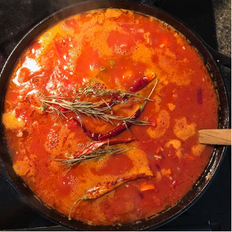

Pasta Marinara

I started working on this marinara in grad school and refined bulk production later on. There are almost always a few jars in our freezer: we use it as is, cook it down for pizza sauce, or jazz it up with meatballs, olives, or fried eggplant.
I usually spend a Sunday afternoon with it bubbling on the stove, though it is ready after about an hour. The sauce deepens in colour and flavour over time, so keep it on for as many hours as you can spare.
| Amount | Ingredient | Substitutions & notes |
|---|---|---|
| 4 × 28 oz cans | Crushed or whole tomatoes | Or the equivalent weight in fresh tomatoes |
| 1 large red, 1 large yellow | Onion, diced | Or about 700 g of any chopped onion |
| 3–4 | Carrots, diced | About 200 g |
| 10–15 cloves | Garlic, minced | |
| 1 tbsp | Salt | |
| ½ tbsp | Chili powder | Cayenne or paprika, mood dependent |
| 4 whole | Dried red chili | Usually árbol chiles |
| 2 sprigs each | Dried thyme and rosemary | Or 1 tbsp dried mixed herbs |
| 1 cup | Olive oil |
Make it a meal
- Linguine, 80 g dried per person — or any pasta
- Parmesan, as you like — or crushed toasted pine nuts, if non-dairy
Make the marinara sauce
- Heat olive oil on medium in a deep pot. When shimmering, add onions and cook till translucent.
- Add garlic, cook till fragrant.
- Add carrots, cook till soft.
- Add tomatoes with their liquid. Add salt, chili, and herbs.
- Leave to bubble gently on low-medium heat for 1–3 hours, until deep orange-red and thick. You cannot really overcook it.
- Set aside, and freeze what you don't use in 2-cup portions.
Cook and assemble the pasta
- Bring water to a boil. Cook the pasta till soft but with a bite, about 8–9 minutes. Drain.
- Bring about a cup of marinara per person to a bubble in the empty pot. Add the pasta and any extras. Mix till everything is coated and evenly hot.
- Serve in bowls, with parmesan or pine nuts.